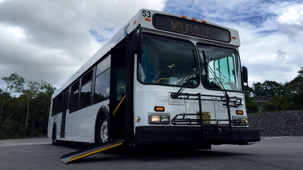

There are a large number of students who travel to NSCC COGS via the Kings Transit Bus System. We've gathered all the information you'll need for the easiest travelling both to and from your classes here, if you choose to take the bus! For more information on the Kings Transit Bus System, as well as more detailed schedules, please check out their website by clicking here!
